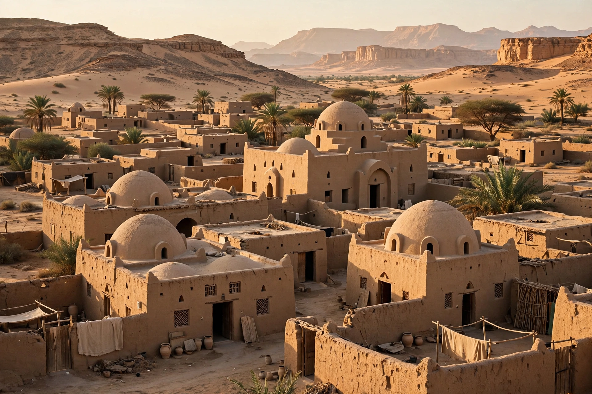

New Gourna is a village near Luxor in Egypt, designed by architect Hassan Fathy between 1946 and 1952 for the Egyptian Department of Antiquities. It was intended to resettle the residents of Old Gourna, whose village stood among the tombs of the Theban Necropolis on Luxor's west bank.
Fathy used traditional Nubian techniques — mudbrick domes and vaults built without formwork — local materials, thick walls, courtyards and wind catchers for passive cooling. The village included a mosque, market, theatre, school and houses grouped around small squares, each house tailored to a family.
Many Gournis resisted relocation, fearing loss of livelihood linked to the tombs and tourism, and the village was never fully occupied as planned. Parts deteriorated, though a restoration effort supported by UNESCO and the World Monuments Fund began in the 2010s.
Described in Fathy's book Architecture for the Poor (1973), New Gourna became hugely influential in vernacular, sustainable and appropriate-technology architecture worldwide.